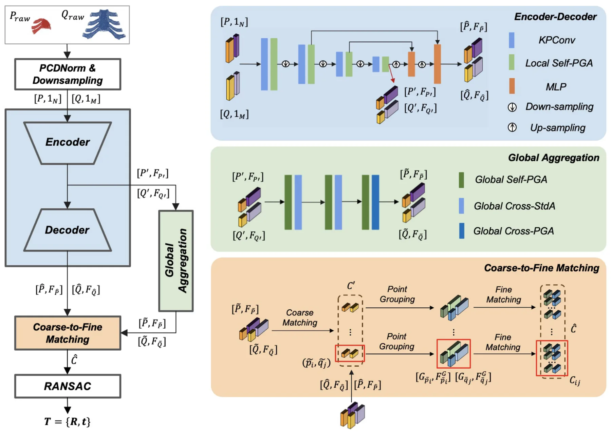
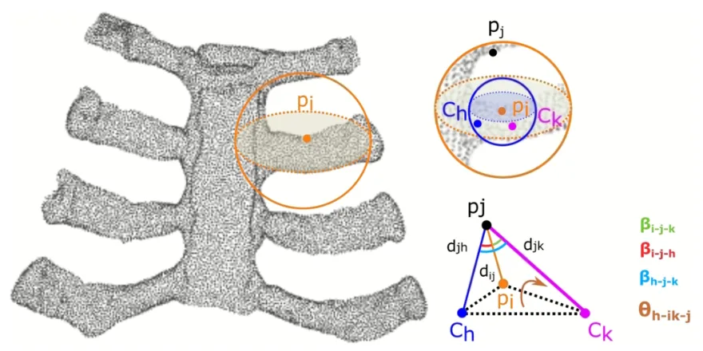
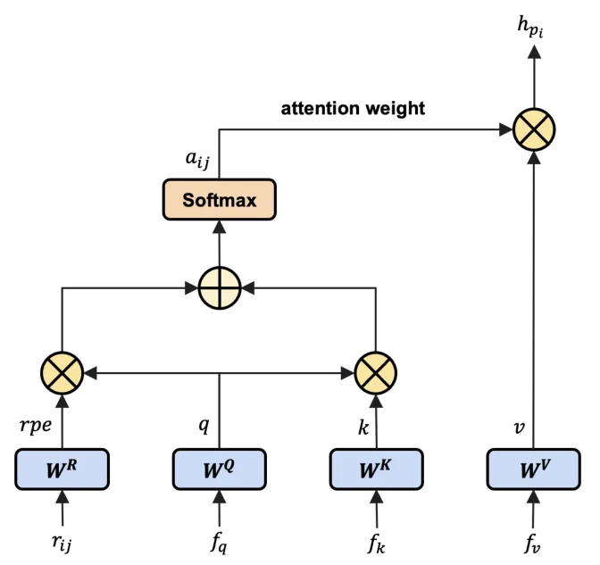

面向计算机辅助手术的点级几何感知 Transformer 部分到完整点云配准Point-Wise Geometry-Aware Transformer for Partial-to-Full Point Cloud Registration in Computer-Assisted Surgery
与点云配准和低重叠匹配直接相关，指标强且方法可借鉴；但数据域偏医学骨骼，代码暂未开放，需验证在机器人 LiDAR/大尺度地图中的泛化性。
一句话工作总结
GAPR-Net 用变换不变的点级局部几何特征和 cross-attention 改善 partial-to-full 点云配准，在骨骼手术场景达到毫米级 RMSE。
摘要
部分到完整点云配准在重叠率变化、点密度波动和噪声存在时仍然困难。虽然 Transformer 在点云处理中表现出潜力，但已有方法常把它限制在全局上下文聚合，忽略了建立精确对应所需的细粒度局部几何。本文提出 GAPR-Net，一个结合卷积与 Transformer 模块的 coarse-to-fine 学习式点云配准框架，并通过 cross-attention 在 partial 与 full 点云之间融合局部和全局信息。方法提出一种变换不变的 point-wise geometric feature，用单点相对邻域点的几何关系稳健捕获局部结构。在胫骨、股骨、骨盆和胸椎软骨四类骨骼上的实验显示，整体 registration recall 达到 94.2%，RMSE 为 1.992 mm，旋转和平移的 R² 分别为 0.908 和 0.974，表明该方法能有效处理 partial-to-full 配准问题，并服务手术导航与机器人介入。代码将在双盲评审后开放。
Partial-to-full registration remains challenging due to varying overlap ratios, fluctuating point densities, and the presence of noise. While transformers have shown strong potential for point cloud processing, prior methods typically confine them to global context aggregation, overlooking fine-grained local geometry crucial for accurate correspondence. We propose \emph{GAPR-Net}, a learning-based point cloud registration framework with a coarse-to-fine architecture that combines convolution and transformer modules, in which local and global information is fused between the partial and full point clouds using a cross-attention mechanism. To achieve this, a transformation-invariant point-wise geometric feature representation is proposed, which can robustly capture relative geometric features for individual points with respect to their neighboring points. To evaluate the effectiveness of the proposed approach, experiments are conducted on four geometrically distinct bones, including the tibia, femur, pelvis, and thoracic cartilage. The overall registration recall reaches 94.2\%, the method results in a low RMSE of 1.992 mm and $R^2$ values of 0.908 and 0.974 for rotation and translation, respectively. The results demonstrate that the proposed method effectively addresses the partial-to-full point cloud registration problem. The proposed method enables highly accurate 3D point cloud registration using partial observation, providing a critical foundation for precise surgical navigation and robotic interventions in computer-assisted surgery. The code will be accessed after the double-blind review process.
中文解读摘录
- 作者：Siyu Zhou, Zhongliang Jiang；类别：cs.CV；发布日期：2026-06-11；采集 score=9
- 核心问题：partial-to-full 点云配准在重叠率变化、点密度波动和噪声存在时容易失稳；已有 Transformer 点云方法多偏全局上下文聚合，容易忽略建立精确对应所需的局部几何。
- 方法亮点：提出 GAPR-Net，采用 coarse-to-fine 框架，把卷积和 Transformer 模块结合起来，并通过 cross-attention 在局部/全局层面融合 partial 与 full 点云信息；核心是一个变换不变的 point-wise geometric feature，用相邻点相对几何描述单点局部结构。
- 结果信号：在胫骨、股骨、骨盆、胸椎软骨四类几何差异明显的骨骼数据上，registration recall 达到 94.2%，RMSE 为 1.992 mm，旋转和平移的 $R^2$ 分别为 0.908 和 0.974。
- 关注价值：直接命中点云配准，尤其适合关注低重叠、局部几何描述子和 partial observation 的研究者。局限是场景偏手术导航，代码需双盲评审后开放；后续应确认它在室外 LiDAR、稀疏/非均匀扫描和大尺度地图上的泛化性。
图表/页面预览

{kind=link}

{kind=link}

{kind=link}
